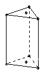
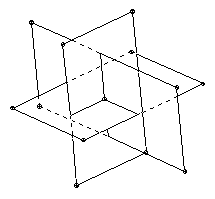

| 1. Given n > 3 points in the plane, no 3 collinear, show that there is a circle through 3 of the points such that none of the points lies inside the circle. | |
| 2. Given n positive reals a1, a2, ... , an, with product 1, show that (1 + a1)(1 + a2) ... (1 + an) ≥ 2n. | |
|
3. A right prism with equilateral triangles side k as base and top and height h has small holes in the center of the base and in the center of the top. The inside of the three vertical walls has a mirror surface. Light enters through the small hole in the top and strikes each vertical wall once before leaving through the hole in the bottom. Find the angle at which it enters and the length of each part of the path.
 |
|
| 4. Given any 5 points in the plane, no 3 collinear, show that 4 of them form a convex quadrilateral. | |
|
5. Show that tan( (π sin x)/(4 sin y) ) + tan( (π cos x)/(4 cos y) ) > 1 for 0 ≤ x ≤ π/2 and π/6 < y < π/3.
Alternative version
|
|
|
6. Let P be a convex plane polygon with perimeter L and area A. Let S be the set of all points in space which lie a distance R or less from a point of P. Show that the volume of S is 4/3 πR3 + 1/2 LR2 + 2 AR
Alternative version
|
|
|
7. Find all the ways in which two infinite circular cylinders can be arranged so that their intersection lies in a plane.
Alternative version
|
|
| 8. Given a two-pan balance, a single 1 kg weight, and a large quantity of sugar, show how to obtain 1000 kg of sugar in the smallest possible number of weighings? (You are allowed to put the weight in either pan (or neither), to pour sugar from one pan to the other, and to add sugar to either pan.) | |
| 9. Find x such that sin 3x cos(60o - 4x) + 1 = 0 and sin(60o - 7x) - cos(30o + x) + m is non-zero, where m is a fixed real number. | |
| 10. How many real solutions are there to the equation x = 1964 sin x - 189? | |
| 11. Does there exist an integer k which can be expressed as the sum of two factorials k = m! + n! (with m ≤ n) in two different ways? | |
| 12. Find digits a, b, c such that if A is the number made up of 2n digits a, B is the number made up of n digits b, and C is the number made up of n digits c, we have √(A - B) = C for at least two different values of n. Find all n for which the equation holds. | |
| 13. Let x1, x2, ... , xnbe positive reals. Show that ½ n(n-1) ∑i<j 1/(xixj) ≥ 4 (∑i<j 1/(xi + xj) )2 and find the conditions on xi for equality. | |
| 14. What is the largest number of regions into which we can divide a disk by placing n points on its circumference and joining all the points? | |
| 15. The points C, D lie on the circle diameter AB and do not form a diameter. The lines AC and BD meet at L, and the tangents at C and D meet at N. Show that the line LN is perpendicular to AB. | |
| 16. C is a circle center O and radius 1. S is a square (in the same plane) with center X and side 2. The variable point X lies inside or on C, and the variable point Y lies inside or on S. Z is situated so that ∠ZXY = ∠ZYX = 45o. Find the locus of Z. | |
| 17. ABCD and A'B'C'D' are two parallelograms arbitrarily arranged in space. The points M, N, P, Q lie on the segments AA', BB', CC', DD' respectively, so that the ratios AM/MA', BN/NB', CP/PC', DQ/QD' are all equal. Show that MNPQ is a parallelogram and find the locus of its center as M varies along the segment AA'. | |
| 18. Solve the equation 1/sin x + 1/cos x = 1/k, where k is a real parameter. Find for which values of k the equations has a solution, and the number of solutions. | |
| 19. Construct a triangle given the three exradii. | |
|
20. Three equal rectangles with the same center are mutually perpendicular. The long sides are also mutually perpendicular. P is the polyhedron whose vertices are the vertices of the rectangles. Find the volume of P and find the condition for P to be regular.
 |
Taken from the Russian book "International Mathematical Olympiads", publ Moscow 1968. This book apparently came out annually. Does anyone know how complete its list of shortlist questions is? Presumably question 10 was on the 1964 shortlist and the questions are arranged according to the year. So this source gives at most 9 questions for the 5 years 1959-1963, and at least 52 (and at most 61) for the 4 years 1964-7 (an average of 13 - 15 a year). Note that in the early years few countries competed in the IMO: 1959 7 (all Soviet bloc), 1960 5, 1961 6, 1962 7, 1963 8, 1964 9, 1965 10, 1966 9, 1967 13 (first Western countries competed). So presumably there were fewer questions submitted.

Shortlist home
© John Scholes
jscholes@kalva.demon.co.uk
3 Jan 2003
Last corrected/updated 3 Jan 2003